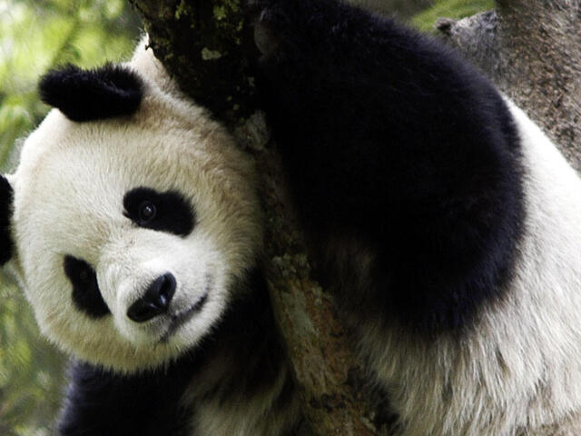

Los Osos Panda

A pesar del número de ejemplares limitado y de las reducidas zonas donde habita, es uno de los animales más reconocibles de todos los rincones del mundo. Durante larga tiempo estuvo en grave riesgo de extinción y se convirtió el símbolo del Fondo Mundial para la Naturaleza. Actualmente la cantidad ejemplares en libertad está en aumento. El apetito de este mamífero es insaciable y puede llegar a pasar más de la mitad del día comiendo aquello que más le gusta sin descanso: bambú. Además también se alimenta de algunos frutos y pequeños animales. A pesar de su aspecto torpe y lento es un animal muy ágil trepando a los árboles así como desplazándose por el agua a nado. Suelen tener un comportamiento solitario, excepto cuando buscan aparearse. Las hembras pasan un periodo de gestación de 5 meses hasta que nace la cría, totalmente ciega y blanca. Suelen vivir entre quince y veinte años, pesan unos 130 kilos y pueden llegar a medir 1'5 metros. Su hábitat natural son las zonas montañosas de China. Este mamífero es considerado como un símbolo de resistencia, pasó de estar al border de la extinción a recuperarse poco a poco en sus índices poblacionales. El panda es uno de los animales más reconocidos del planeta por su particular patrón de pelaje negro con blanco. Estos mamíferos originarios del centro de China son un símbolo de lucha por la conservación de las especies, el Fondo Económico para la Naturaleza (WWF, por sus siglas en inglés) utiliza a este animal como su logo desde 1961.